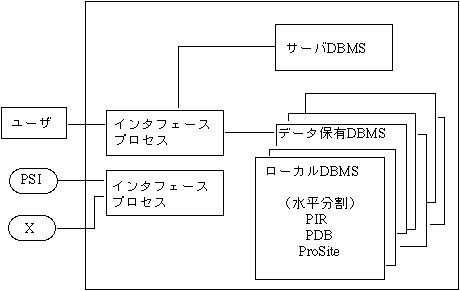

（１３）並列非正規関係データベース管理システム：Ｋａｐｐａ−ｐ
マ シ ン：PIM
環 境：PIMOS 3.45
言 語：KL1
ソース量：6 MB
文 書：マニュアル (日本語)
概要
Ｋａｐｐａ−ｐは、非正規関係モデルに基づく、ＰＩＭ上の並列データベース
管理システムである。
構成

機能
- 非正規関係モデル
- 複雑な構造のデータを効率的に処理するために、非正規関係モデルを採用
している。
- データ配置と並列処理
- 核クラスタ毎に問合せ処理能力をもっているため、非正規関係の分散配置
や、一つの非正規関係を複数のクラスタに分ける水平分割によって、クラスタ
間の並列処理が可能になる。
- 応用プログラムの取り込み
- 同じマシン上で動作する応用プログラムとの通信量を減らすため、応用プ
ログラムの一部を問合せ処理を行うクラスタで実行する機能を持つ。
ＦＴＰ
- 並列非正規関係データベース管理システム：Ｋａｐｐａ−ｐ
[1,897K]

www-admin@icot.or.jp